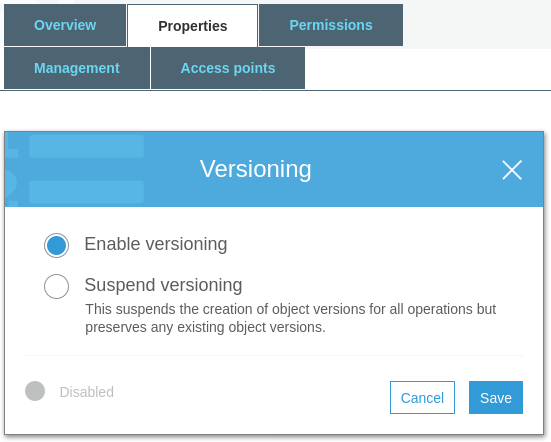
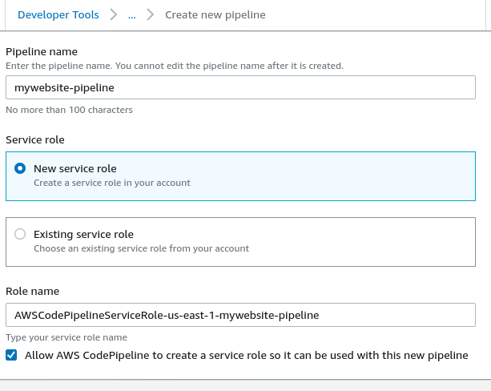

Posted on June 8, 2020 - 8 minute read
How to build a static website on AWS in 5 easy steps
Backstory
I spent so many years procrastinating and failing attempts at blogging. All the beautiful things I could do overwhelmed me. And then I remember how bad I am at keeping the writing pace I was setting up for myself. Inspired by Nick Russo's minimalist approach, I finally pushed my content to AWS.
Interestingly enough, I was very pleased to find that I was not the only person doing this. So much that there is a #CloudResumeChallenge going around. This is an initiative from Forrest Brazeal. He helps people show concrete cloud skills that could land them their next job. Please refer to Forrest's guidelines to take part in the challenge, because this is so cool!
I already have IT experience, which disqualifies me. But since my initial goal was to simply put my website out there, here are the steps I took to get the same results.
- Create a S3 bucket and configure it as static website
- Create a pipeline for automated deployments
- Create a SSL certificate
- Create a CloudFront distribution
- Configure the DNS management
Step Zero : Domain name, content and format
Purchase a domain name
Nobody will remember that huge public S3 url when trying to access your website. Not even yourself.
So get an unique name people can type. Most domains cost $9 to $18 a year and there are plenty of resources available. Google, for example, has its own domain site. It is easy to use with tons of tutorials and an extensive FAQ resources section.
If you want to keep everything within AWS, go with Route 53. Here you can buy a domain name from inside the AWS console.
Create and format your content
Create a content. If you don't know what to write, create a resume. It's simple, direct and look a lot cooler than only having a LinkedIn profile.
Format it as you like, but if you are short on HTML/CSS skills, the Internet is full of templates. I recommend you to check out W3Schools and freeCodeCamp. Harness the front-end dev that lives in you!
Create an AWS account for access to S3
Duh.
Step 1 : Create a S3 bucket and configure it as static website
Create a S3 bucket
Okay, on to the fun part! First thing we need is a S3 bucket.
It is critical that your bucket has the same name as your domain name. If your website domain is mywebsite.com, then your bucket name must be mywebsite.com.
The reasoning for this has to do with how requests are routed to S3. The request comes into the bucket, and then S3 uses the Host header to route to the appropriate bucket.
aws s3 mb s3://mywebsite.com
- AWS Console
- Navigate to S3 in the AWS Console.
- Click Create bucket.
- Input the name for the bucket and choose a region to host it.
- Click Next to go to the next panel.
- Click Next - leave the Configure options panel as is.
- Click Next - leave the Set permissions panel as is (we'll deal with it later).
- Click Create bucket (yeah, it is that easy)
- Voilà! Bucket created!
Set the bucket to versioning
This step is kinda optional, but good to do anyway. Versioning your bucket ensures every object there has previous versions available to restore.
aws s3api put-bucket-versioning --bucket mywebsite.com --versioning-configuration Status=Enabled
- AWS Console
- Navigate to S3 in the AWS Console.
- Click into your bucket.
- Click the Properties section.
- Click the Versioning option.
- Select Enable Versioning.
- Click Save.
- 
Set the bucket as static website
Your S3 bucket should act like a static website, not a normal bucket. Let's set it up as such.
aws s3 website s3://mywebsite.com/ --index-document index.html --error-document error.html
- AWS Console
- Navigate to S3 in the AWS Console.
- Click into your bucket.
- Click the Properties section.
- Click the Static website hosting option.
- Select Use this bucket to host a website.
- Enter index.html as the Index document.
- Click Save.
You now have an Endpoint address. It is a S3 website url like this http://mywebsite.com.s3-website-us-east-1.amazonaws.com/.
Set bucket permissions : public access
Your bucket serves your static website, so it must be accessible to anyone in the world. We call this anonymous access to the bucket.
By default, public access is denied to any new buckets created. Because, you know, public buckets are an unnecessary exposure. Yet, for our static website, we need a public access bucket policy. You must complete this step before adding the bucket policy.
aws s3api put-public-access-block --bucket mywebsite.com --public-access-block-configuration '{"BlockPublicPolicy": false, "RestrictPublicBuckets": false}'
- AWS Console
- Click into your bucket.
- Select the Permissions tab at the top.
- Under Block Public Access, click Edit.
- Turn off "Block public access to buckets and objects granted through new public bucket or access point policies"
- Turn off "Block public and cross-account access to buckets and objects through any public bucket or access point policies"
- Leave the other permissions blocked on, and Save.
- Confirm the operation by typing confirm in the alert window and click Confirm.
Set bucket permissions : policy
Now let's update the Bucket Policy to allow public read access to anyone in the world. AWS works with JSON format for its configuration. You can have your .json file uploaded from the CLI or add it to the Console.
aws s3api put-bucket-policy --bucket mywebsite.com --policy file://policy.json
- AWS Console
- Still inside the Permissions section.
- Select Bucket Policy.
- Add the JSON code to the Bucket Policy.
- Save and your bucket is now public.
{
"Version": "2008-10-17",
"Statement": [
{
"Sid": "PublicReadGetObject",
"Effect": "Allow",
"Principal": "*",
"Action": "s3:GetObject",
"Resource": "arn:aws:s3:::mywebsite.com/*"
}
]
}
Upload your content to the bucket
Copy all the files for your website into the bucket. The root page of your website (index.html) should be at the root level of the S3 bucket.
aws s3 cp local_folder/mywebsite/ s3://mywebsite.com/ --recursive
- AWS Console
- Navigate to S3 in the AWS Console.
- Click into your bucket.
- Click the Upload button.
- Drag and drop or select Add files, add the entire static website directory.
- No need to configure permissions for the files, we did that for the bucket. Click Upload.
Check if the bucket is accessible
Remember that Endpoint address? The one you got when you enabled the static website hosting? You can use it now to check if your website is available.
Step 2 : Create a pipeline for automated deployments
So far, every time we update a page or write a new blog post, we have to reflect that to our bucket. As fun as it is, uploading files by hand gets old fast!
So why not automate it? Let's setup Git repository with CodeCommit. And then a pipeline in CodePipeline to deploy our code to the S3 bucket when we push to Git.
Setup a repository in CodeCommit
- AWS Console
- Make sure to have the required IAM credentials to CodeCommit beforehand.
- Navigate to CodeCommit in the AWS Console.
- Click Create repository.
- Click Create.
Setup a pipeline in CodePipeline
- AWS Console
- Navigate to CodePipeline in the AWS Console.
- Click Create pipeline.
- Enter a name for your pipeline.
- Select New service role.
- Role name will fill out with something like AWSCodePipelineServiceRole-us-east-1-mywebsite-pipeline
- If not, check the box for Allow AWS CodePipeline to create a service role.
- Click Next.
- 
- Select AWS CodeCommit as source provider.
- Select the repository name.
- Select the master branch.
- Select CodePipeline as the option for change detection.
- Click Next.
- Selection of a build stage is optional. As we didn't setup any, click Skip build stage.
- Select Amazon S3 as deploy provider.
- Select the same region of the S3 bucket.
- Select the bucket name.
- Check the box for Extract the file before deploy
- Click Next and then Create pipeline.
Alternative step: use GitHub instead
The steps are the same as with CodeCommit, the difference is the source selected.- AWS Console
- Select GitHub as source provider.
- Click on the Connect to GitHub button. That will connect to your GitHub account.
- Select the repository name.
- Select the master branch.
- Select GitHub webhooks as the option for change detection.
- Click Next.
- Selection of a build stage is optional. As we didn't setup any, click Skip build stage.
Step 3 : Create a SSL certificate
We don't want only a website. We want a SECURE website. Don't you feel good seeing the little "Connection is secure" on your address bar? To allow access through HTTPS, we need to create a SSL certificate first.
- AWS Console
- Navigate to Certificate Manager in the AWS Console.
- Click Request a certificate.
- Select Request a public certificate and then click on Request a certificate.
- Add your domain name. Make sure you request a certificate for *.yourdomain.com so it covers all sub-domains. Click Next.
- You must be the owner of this domain, select the Email validation to confirm. Click Next.
- Give it a "Name" tag to identify the certificate on your dashboard, click Review.
- Confirm and request. It can take a few moments to complete the validation.
Step 4 : Create a CloudFront distribution
Now we need distribute our content. CloudFront Distribution is here for this.
- AWS Console
- Navigate to CloudFront in the AWS Console.
- Click Create distribution.
- Select Web as the delivery method. Click Get Started.
- Origin Domain Name: select your S3 bucket.
- Viewer protocol policy: Redirect HTTP to HTTPS.
- Allowed HTTP Methods: GET, HEAD, OPTIONS.
- Alternating domain names: add your domain name, i.e. mywebsite.com
- Select Custom SSL Certificate and select the certificate you created. Make sure the certificate is already validated.
- Create Distribution

Step 5 : Config the DNS management
We have all the backstage ready, now let's release it to the world! For that, we need to let your domain to pull the content. That's what the DNS is for.
- AWS Console
- Navigate to Route53 in the AWS Console.
- Go to Hosted Zone. Click Create Hosted Zone
- Enter in your domain name without the www (e.g. example.com). Click Create.
- That will give you the default record sets (the cluster of 4 NS-type). You will need to create two more custom record sets.
- Click Create Record Set.
- Select Yes for Alias.
- Set your Alias Target to point to your CloudFront distribution and Create.
- Create another Record Set. Redirect to the same Alias Target. But this time, add www to the "Name" field so it will point to your domain www.mywebsite.com.

Extra step : Transfer an existing domain to AWS
If you are like me, you may have purchased a domain with Google before you figured out Amazon could do it too. So how to make AWS use the DNS for your domain, then? Tell Google to send all requests to your website in AWS!
- Log into Google Domains
- Click on your domain.
- Click on the DNS menu.
- Select Use Custom Name Servers instead of the default Google Domains.
- Click on the + button 3 more times to get a total of 4 text fields.
- Copy and paste each Name Server (NS) from the Route 53-Record Sets panel.
Bonus : Visitor counter
I didn't put in place a visitor counter yet, that's not my priority right now. But if you are here for the challenge, I recommend you check the reddit thread. There are good tips and references there that can help you.
Conclusion
You did it! You’ve got a static website that updates on Git push. And it is served over HTTPs! That will be a nice example of your skills for future employers. Nice!
I hope that this post helped get started with AWS by doing something cool.